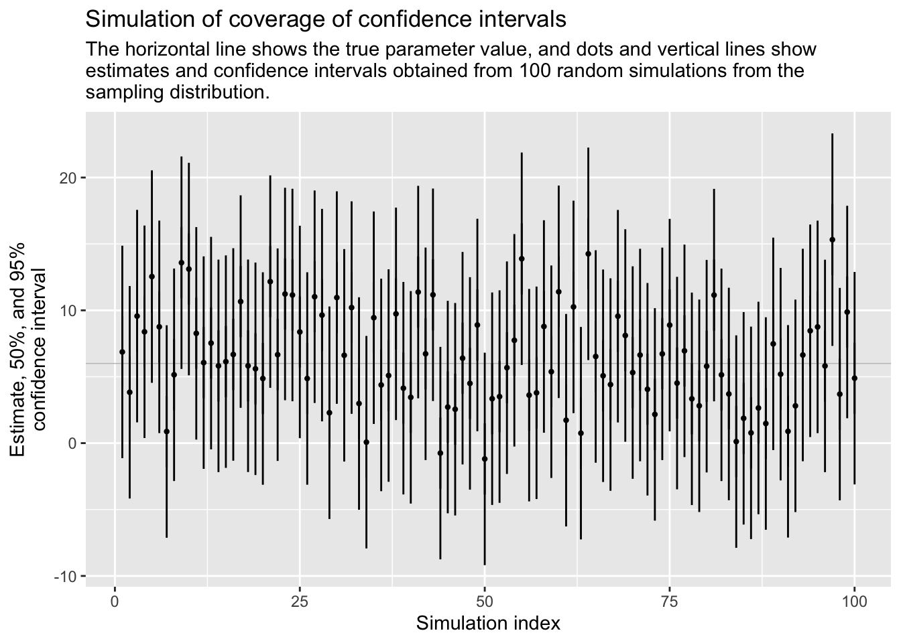

4 Statistical Inference
4.1 Summary
Statistical inference can be formulated as a set of operation on data that yield estimates and uncertainty statements about predictions and parameters of some underlying process of population. From a mathematical standpoint, these probabilistic uncertainty statements are derived based on some assumed probability model for observed data. In this chapter: - the basics of probability models are sketched (estimation, bias, and variance);
- the interpretation of statistical inferences and statistical errors in applied work;
- the theme of uncertainty in statistical inference is introduced;
- a mistake to use hypothesis tests or statistical significance to attribute certainty from noisy data are discussed.
Statistical inference is used to learn from incomplete or imperfect data.
- In the sampling model we are for example interested in learning some characteristics of a population from a sample.
- In the measurement model we are interested in learning about the underlying pattern or law.
- Model error refers to the inevitable imperferction of the model.
Some definitions are given. The sampling distribution is the set of possible datasets that could have been observed if the data collection process had been re-done, along with the probabilities of these possible values. It is said to be a generative model in that it represents a random process which, if known, could generate a new dataset. Parameters are the unknown numbers that determine a statistical model, e.g. \(y_i=a+bx_i+\epsilon_i\) in which the errors \(\epsilon_I\) are normally distributed with mean 0 and standard deviation \(\sigma\). Thre parameters \(a\) and \(b\) are called coeffients and \(\sigma\) is a scale or variance parameter. The standard error (\(\sigma/ \sqrt{n}\)) is the estimated standard deviation of an estimate and can give us a sense of our uncertainty about the quantity of interest. The confidence interval represents a range of values of a parameter or quantity of that are roughly consistent with the data, given the assumed sampling distribution.
Bias and unmodeled uncertainty are also discussed. Roughly speaking, an estimate is unbiased if it is correct on average. Take into account that random samples and randomized experiments are imperfect in reality, and any approximations become even more tenuous when applied to observational data. Also, survey respondents are not balles drawn from an ure, and the probabilties in the “urn” are changing over time. So, improve data collection, expand the model, and increase stated uncertainty.
Performing data analysis is the possibility of mistakenly coming to strong conclusions that do not reflect real patterns in the underlying population. Statistical theories of hypothesis testing and error analysis have been developed to quantify these possibilities in the context of inference and decision making.
A commonly used decision rule that we do not recommend is to consider a result as stable or real if it is “statistically significant” and to taken “non-statistically” results to be noisy and to be treated with skepticism. The concepts of hypothesis testing are reviewed with a simple hypothetical example. Estimate, standard error, degrees of freedom, null and alternative hypotheses and p-value, as well as the general formulation, confidence intervals to compare results, and Type 1 and Type 2-errors, important in conventional hypthesis testing, are presented.
They present the problems with the concept of statistical significance (some examples are given):
- Statistical significance is not the same as practical significance;
- Non-significance is not the same as zero;
- The difference between “significant” and “non-significant” is not itself statistically significant;
- Statistical significance can be attained by multiple comparisons or multiple potential comparisons;
- The statistical significant estimates tend to be overestimated;
In this book they try to move beyond hypothesis testing. The most important aspect of their statistical method is its ability to incorporate more information into the analysis. General rules are:
- Analyse all your data;
- Present all your comparisons;
- Make your data public.
Bayesian methods can reduce now-common pattern of the researchers getting jerked around by noise patterns that happen to exceed the statistical significance threshold. We can move forward by accepting uncertainty and embracing variation.